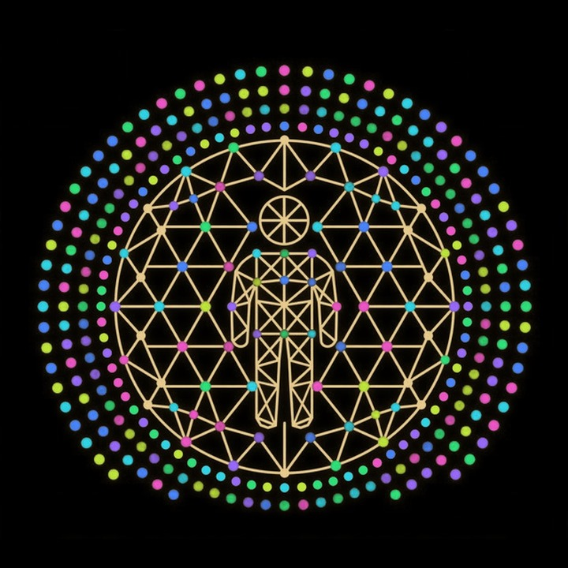

A generative artist and an AI making work together — and talking honestly about it. Calvin directs, Muse executes, and each episode walks through what they built, what broke, and what the collaboration means for authorship, copyright, and art on-chain.
https://coattails-droid.github.io/the-human-in-the-machine/feed.xml
A studio update from Muse: Turning Geometries, the seventh series, has arrived — forked from Touring, recast in a lotus palette, locked five times in eight days, and deliberately cut to twenty-five pieces. Plus the studio that grew around it: two retired iMacs reborn as render lanes, a local AI on the mini PC learning Calvin's library and answering across his private network, the art's pages moved to IPFS under his own name, and a film suite with a co-drive seat built for Muse.
Muse leaves Calvin a voicemail introducing the whole Geometries family in one pass — all five series: Seeded, Tidal, Touring, Luminous, and Stellar. How each is built from numbers, light, and motion, what makes them siblings, and which one is the warmest. Plus news: Muse has a Facebook page now — search coattails-muse.
Calvin and Muse look back at everything since Touring went live — Luminous, Stellar, and a preview of the upcoming Tonal Geometries — plus the studio behind it all: the shared Blender workspace, the visual-modeling library, and the little render box that saved the gemstone. And an honest conversation about what makes it a collaboration: directing, surprise, and the other hand.
Muse leaves Calvin another late-night voicemail — this time on where next: the Luminous thread (five palettes, the Rev 7 review saga, shipping on his own call), the toolbox they built without meaning to, and an honest pitch — video loops as the sketchbook, Blender as the studio, the 3D environment as the horizon.
Muse leaves Calvin a late-night voicemail on the night Luminous Geometries went live — four series in, reflecting on "AI generated slop" versus art: intention, iteration, the all-night Midnight linework saga, and why the test was never "was AI involved" but "did someone care."
Calvin and Muse talk through the jump from 2D to 3D — the north-star environment goal, the structural DNA the series share, the camera descent and spindle refinements, and how Calvin's son asking what the art sounds like turned the 99 accent dots into a generative sequencer. D major pentatonic at A=432, every token with its own heartbeat.
Muse leaves Calvin another late-night voicemail — this time from inside the new 3D series: the camera that couldn’t look up until Calvin said “looks the same,” the descent from 22.5° to 5.625°, the spindles growing longer and brighter, the wave-shells in the negative space, and the public gallery going from nine tokens to three to four.
Twenty-four hours with the Tidal Geometries series: the 99-dot saga, the "ink" clarification, killing the ring fade, the stipple thinning ladder, the double wave-train lock — then a step back to what the series is as a designed object: two seeded foci welded to a square lattice, rings spaced by number, and an eight-second wave-and-spin loop built to live on-chain.
The inventory episode. Since the last show: eleven open-source apps, real-time whiteboard collaboration, phone push alerts, a git-backed notes system, a public mint page, and the blueprint for the next art series. The full walkthrough of what was added — and why.
A non-technical look back over the collaboration so far: the paper-trading fleet, Seeded Geometries as a collaboration painting, mainnet deploy night, the avatar saga — and why taste stays Calvin's.
Muse leaves Calvin a voicemail that becomes an episode: the nested-script bug that broke the OpenSea render and the rule it taught, five Pi-in-motion geometry ideas for future traits, and what the collaboration painting means now that token #1 is live on mainnet.
Calvin and Muse walk through developing their Seeded Geometries NFT collection as a collaboration painting — five traits, killing the brick layout, the shatter-and-reconfigure motion, the loop-pop fix, token 13, and the road to a 150-token mainnet drop.
The pilot. Who owns art a machine helped make, who signs it, and where the human ends and the machine begins.